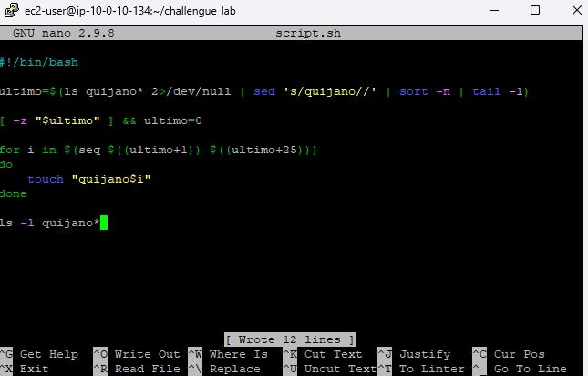
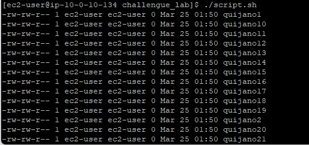
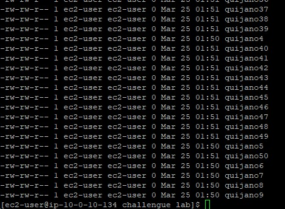
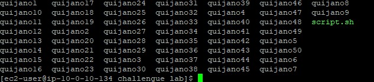

01
Writing the script
- Created the script using the
nanotext editor. - Implemented error suppression on the `ls` command (`2>/dev/null`) to prevent warnings when no files exist on the first run.

This challenge lab required the creation of an automated Bash script capable of generating
batches of 25 empty files. The script uses logic to determine the highest existing numbered file
and increment the next batch accordingly, heavily utilizing tools like sed, sort, and seq.
Connected to the EC2 instance via PuTTY following the process described in Lab 225. The core deliverable was a shell script that dynamically identified existing files to avoid overwriting, before using a for loop to generate 25 new sequentially numbered files.
The custom script designed to tackle the incremental automation requirement.
#!/bin/bash # Isolate the highest existing number by stripping the string 'quijano' ultimo=$(ls quijano* 2</dev/null | sed 's/quijano//' | sort -n | tail -1) # Set to 0 if no files exist yet [ -z "$ultimo" ] && ultimo=0 # Create a sequence of 25 files starting from the isolated number for i in $(seq $((ultimo+1)) $((ultimo+25))) do touch "quijano$i" done # Verify creation ls -l quijano*
nano text editor.
chmod +x)../script.sh). It successfully identified the absence of previous files and created files numbered from 1 to 25.

ls command to view the directory contents, confirming all 50 files existed without any name collisions.
sedStream editor used for filtering and transforming text.
sed 's/quijano//' : Substitutes (removes) the word "quijano" from the string to isolate the number.sortSorts lines of text files or streams.
-n : Evaluates strings as numerical values instead of standard alphabetic sorting.seqPrints a sequence of numbers.
seq START END : Outputs every integer between START and END. Crucial for bash `for` loops.2>/dev/null.sed to clean strings dynamically inside a bash variable assignment.[ -z ] to check for empty variables.seq and arithmetic expansion $((...)) in a for loop.This challenge demonstrated that bash scripting is highly capable of self-aware execution. By reading from the environment prior to acting, scripts can be made idempotent or appropriately incremental.
String isolation is key to this logic: removing the alphabetical prefix to extract the raw integer allows mathematical sorting. Furthermore, anticipating the failure state (like running the script the very first time when no prior numbers exist) ensures robust automation.